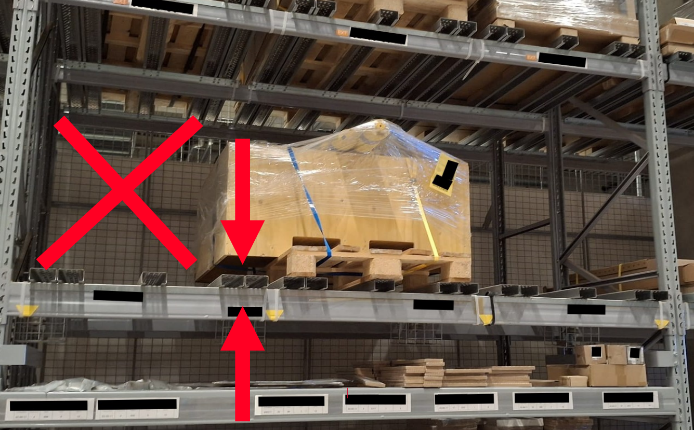

Identification of Obstructions
Im Lager weiß das System, welcher Lagerplatz frei ist. Es weiß nicht, dass davor eine Palette steht. Diese Erweiterung schließt genau diese Lücke — sie fragt im laufenden Wareneingang nach dem Grund, wenn ein Mitarbeiter den vorgeschlagenen Lagerplatz ablehnt, und macht daraus auswertbare Daten.
Entstanden als betriebliche Projektarbeit für die IHK-Abschlussprüfung — als Erweiterung für Microsoft Dynamics 365 Business Central und die App SIEVERS Mobile. Diesen Code habe ich selbst geschrieben, ohne Claude Code; KI diente ausschließlich der Recherche zu Best Practices.
Ausgangslage
Der blinde Fleck im Wareneingang
Zwölf Jahre operative Logistik haben mir dieses Problem gezeigt, bevor ich es programmieren konnte.
Ein Lagermitarbeiter scannt am Staplerterminal das Palettenlabel. Das System schlägt einen Lagerplatz vor. In der Theorie fährt er hin und lagert ein.
In der Praxis ist der Platz regelmäßig nicht nutzbar: eine beschädigte Traverse, ein blockierter Weg, eine Nachbarpalette mit Überbreite. Der Mitarbeiter lehnt den Vorschlag ab, sucht auf Sicht einen freien Platz und lagert dort ein. Der Prozess läuft weiter — aber der Grund verschwindet.
Damit bleibt derselbe problematische Lagerplatz im System weiterhin frei und wird der nächsten Schicht erneut vorgeschlagen. Das Problem vererbt sich, ohne je irgendwo aufzutauchen. Zwischen der systemischen Auslastung und der physischen Realität im Lager entsteht eine Lücke, die niemand beziffern kann.
- Problem
- Abweichungen vom vorgeschlagenen Lagerplatz werden nicht erfasst. Der Lagerleitung fehlt die Grundlage, um wiederkehrende Hindernisse zu erkennen.
- Anforderung
- Den Grund genau dort abfragen, wo die Entscheidung fällt — ohne den Arbeitsablauf zu unterbrechen und ohne den bestehenden Prozess zu verändern.
- Entscheidung
- Zwei Handgriffe, mehr nicht: Grund antippen, bestätigen. Alles, was länger dauert, wird im Eiltempo des Wareneingangs umgangen.
- Ergebnis
- Erweiterung abgenommen und Bestandteil der Lösung.

Solange Hindernisse im Lager nicht erfasst werden, bildet die systemische Auslastung nicht die physische Realität ab.
Die Lösung
Vier Bilder, ein Ablauf
Von der Ablehnung am Terminal bis zur auswertbaren Liste für die Lagerleitung.


Technische Umsetzung
Danebensetzen statt reinschreiben
Die wichtigste Entscheidung war, den bestehenden Prozess nicht anzufassen.
- Architektur
- Die Lösung ist keine eigene Anwendung, sondern eine Extension, die neben der bestehenden App läuft. Der Standard bleibt unverändert — das hält die Updatesicherheit hoch und die Installation in weiteren Umgebungen einfach.
- Erweiterungspunkt
- Die Anbindung läuft über ein Event mit Event-Subscriber. An der Stelle, an der ein alternativer Lagerplatz angefordert wird, feuert ein Ereignis; meine Logik hängt sich daran und bekommt den abgelehnten Lagerplatz übergeben. Kein Eingriff in fremden Code, klare Abgrenzung, jederzeit wieder abnehmbar.
- Datenhaltung
- Drei neue Tabellen, sauber getrennt nach Aufgabe: Stammdaten für die pflegbaren Gründe, ein Protokoll für die tatsächlichen Ablehnungen und eine Einrichtung für den globalen Schalter. Bestehende Tabellen wurden nicht verändert, sondern ergänzt.
- Schutz der Historie
- Protokolleinträge sind nicht editierbar. Der Grund wird als Code mitgeschrieben, damit ein Eintrag lesbar bleibt, auch wenn der zugehörige Grund später gelöscht wird. Ausgewertet wird, was passiert ist — nicht, was heute noch in der Liste steht.
- Vorgehen
- Wasserfallmodell. Die Komponenten funktionieren nur im Zusammenspiel, einzeln ist nichts lieferbar — damit fällt inkrementelles Vorgehen aus. Die Anforderungen lagen vollständig vor, der Umfang war fest.


Einordnung
Was ich hier selbst gemacht habe
Plätze sperren
Dauerhaft nicht nutzbare Lagerplätze könnten automatisch gesperrt werden, statt weiter vorgeschlagen zu werden.
Positivdaten
Nicht nur abgelehnte, sondern auch erfolgreich genutzte Plätze erfassen — als Basis für eine Optimierung der Einlagerstrategie.
Modular gebaut
Oberfläche, Geschäftslogik und Datenhaltung sind getrennt. Beide Erweiterungen wären additiv möglich, ohne Bestehendes anzufassen.
Aus zwölf Jahren operativer Logistik führe ich ein Whitepaper mit Ideen, die den lagerlogistischen Alltag verbessern würden — teils etablierte Best Practices, teils eigene Ansätze. „Identification of Obstructions“ ist eine davon, umgesetzt und abgenommen.
Die gezeigten Screenshots stammen aus meiner Projektdokumentation und werden mit Zustimmung des Ausbildungsbetriebs verwendet. Das Foto zur Ausgangslage ist ein Symbolbild: privat aufgenommen, weder aus dem Ausbildungsbetrieb noch von einem Kunden, und ohne Rückschluss auf ein Unternehmen. Quellcode, kundenbezogene Angaben, interne Kennzahlen und personenbezogene Daten sind nicht Bestandteil dieser Darstellung.